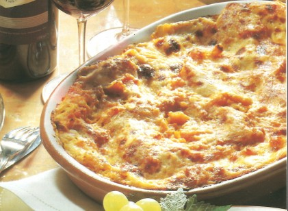

Kürbis-Lasagne

Zutaten:
- 500 g Kürbis
- 250 g Lasagneblätter
- 200 g Ricotta
- 200 g Parmesan, gerieben
- 2 Zwiebeln, gehackt
- 2 Knoblauchzehen, gepresst
- 400 ml passierte Tomaten
- 2 EL Olivenöl
- 2 TL Salz
- 1 TL Pfeffer
- 1 TL Thymian
- 1 TL Basilikum
Zubereitung:
- Den Kürbis schälen und in Scheiben schneiden.
- Ricotta und geriebenen Parmesan in einer Schüssel vermengen.
- In einer Pfanne Olivenöl erhitzen und Zwiebeln und Knoblauch darin anbraten.
- Den Kürbis hinzufügen und für 5 Minuten mitbraten.
- Passierte Tomaten, Salz, Pfeffer, Thymian und Basilikum hinzufügen und für weitere 10 Minuten köcheln lassen.
- Eine Auflaufform mit Lasagneblättern auslegen.
- Die Hälfte der Kürbis-Tomaten-Mischung darauf verteilen.
- Mit der Hälfte der Ricotta-Parmesan-Mischung bedecken.
- Eine weitere Schicht Lasagneblätter darauf legen und den Vorgang wiederholen.
- Die letzte Schicht mit Lasagneblättern abschließen und mit der restlichen Ricotta-Parmesan-Mischung bestreuen.
- Im vorgeheizten Backofen bei 180°C ca. 30 Minuten backen.
- Vor dem Servieren 5 Minuten abkühlen lassen.